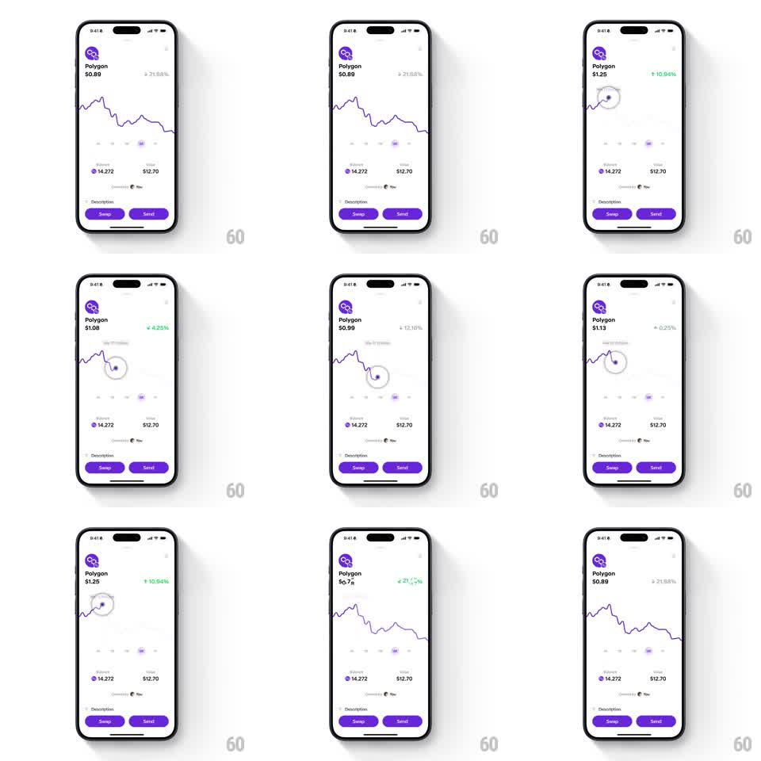

Media
Frame-by-frame

Rebuild this interaction 1:1: Family's graph scrubbing - dragging a finger across the Polygon detail chart moves a scrubber ring along the purple line, the header price rolling to each point's value while the percent-change arrow slides up or down into place with its color, and a timestamp floats at the touch point.

Rebuild this interaction 1:1: Family's graph scrubbing - dragging a finger across the Polygon detail chart moves a scrubber ring along the purple line, the header price rolling to each point's value while the percent-change arrow slides up or down into place with its color, and a timestamp floats at the touch point.
## Integration
Integration: stack-agnostic spec - springs given as stiffness/damping, timed motions as duration + curve; map every value to your framework and animation library of choice.
## Scene
Light Polygon detail: logo, "Polygon $0.89" header with percent change and arrow (red down / green up), purple line chart, timeframe tabs, Balance row (14.272 / $12.70), "Powered by You", Description, purple Swap / Send pills. While scrubbing: a ring on the line with a filled dot, a floating timestamp label ("Sep 17, 11:00am") above the touch, and live-updating header values.
## Motion spec
Pattern: touch-tracked scrubber with direction-aware arrow transitions.
- Touch down: the chart dims slightly (opacity 0.85), the scrubber ring appears at the nearest point (scale 0 -> 1, spring ~340/18, 150ms), and the timestamp label fades in above the finger (150ms).
- Drag: the scrubber tracks the finger's x, snapping to the line's y (per-frame lerp); the price rolls digits to the scrubbed value (100ms per update), e.g. $0.89 -> $1.25 -> $0.78.
- Direction flips: when the scrubbed percent changes sign, the arrow exits vertically (old arrow slides down-out for a rise, up-out for a drop, 150ms) while the new arrow slides in from the opposite side (spring ~320/18, 200ms), color crossfading red <-> green; the percent digits roll.
- Release: the scrubber shrinks out (150ms), the chart restores full opacity, and the header eases back to the live price (digit roll 200ms).
## Calibration
- The scrubber never leaves the line - x follows the finger, y follows the series.
- Arrow and percent move as one unit; the arrow leads the color change.
## Reduced motion
Values and arrows crossfade (150ms); the scrubber appears without spring.
## Don't miss
- The timestamp floats above the touch offset, not centered on the chart.
- The chart's timeframe tabs stay visible but inactive during the scrub.